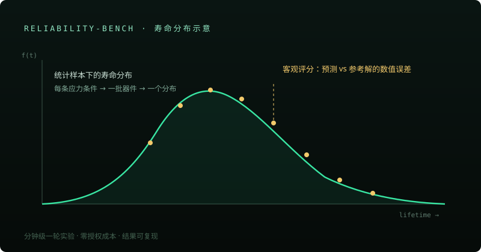

Reliability Benchmark
开源 PDK 上的可复现老化基准
在开源工艺平台上跑通端到端器件老化预测：电性曲线提取 → 应力扫描 → 老化轨迹拟合 → 寿命外推 → 统计分布与敏感性分析 → 证据化报告。一轮完整实验分钟级完成、零授权成本。


为什么是开源工艺
用开源器件与开源求解器意味着任何人都能复现同一条流水线、核对同一个答案—— 这是「可客观评分」的前提，也是它能成为公共基准而不是内部工具的原因。
方向与价值
「AI 能不能做器件可靠性分析」目前没人能客观回答——缺一个公开、可复现、能自动评分的基准。这条流水线用开源器件与求解器把成本压到分钟级，正在包装成公开的基准任务集。
纪律：仿真结论与实测校准严格分层，证据等级不越级；假设参数逐条登记，供评审者复核。